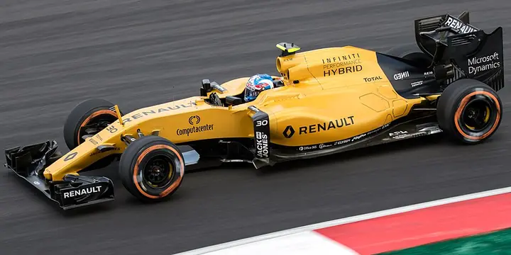

Renault R.S.16
Formula One
Abstract
The Renault R.S.16 is a racing car built for Formula One by Renault. Debut: 2016 Australian Grand Prix.


1Specifications
| Designer | Bob Bell (Chief Technical Officer)Nick Chester (Chassis Technical Director)Chris Cooney (Engineering Director)Martin Tolliday (Chief Designer)Simon Virrill (Deputy Chief Designer)Pierre Genon (Head of Performance Systems)Jon Tomlinson (Head of Aerodynamics)Rob White (Engine Technical Director) |
|---|---|
| Wheelbase | Over 3100 mm |
| Length | 5088 mm |
| Width | 1800 mm |
| Height | 950 mm |
| Weight | 702 kg including driver |
| Predecessor | Lotus E23 Hybrid - Lotus EngineeringRenault R31 - Renault branded |
| Successor | Renault R.S.17 |
| Category | Formula One |
| Constructor | Renault |
| Chassis | Moulded carbon fibre and aluminium honeycomb composite monocoque survival cell |
| Engine | Mecachrome-built and assembled Renault R.E.16 |
| Displacement | 1.6 L |
| Configuration | single-turbocharged V6 engine (90°), limited to 15,000 RPM |
| Engine position | in a mid-mounted, rear-wheel drive layout |
| Electric motor | Infiniti kinetic and thermal energy recovery systems |
| Gearbox | In-house Renault |
| Gears | 8-speed + 1 reverse |
| Fuel | Total Excellium 102 RON unleaded petrol 94.25% + 5.75% biofuel |
| Tyres | Pirelli P Zero dry slick and Pirelli Cinturato treaded intermediate and wet tyresOZ Racing 12 × (front) and 13.7 × (rear) aluminum racing wheels |
| Debut | 2016 Australian Grand Prix |
| Entrants | Renault Sport F1 Team |
| Drivers | 20. Kevin Magnussen30. Jolyon Palmer |
| Races | 21 |
| Wins | 0 |
| Podiums | 0 |
| Pole positions | 0 |
| Fastest laps | 0 |